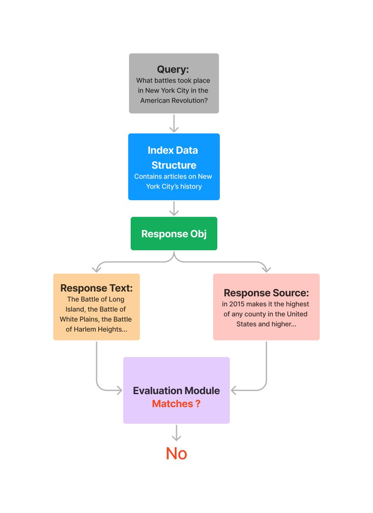
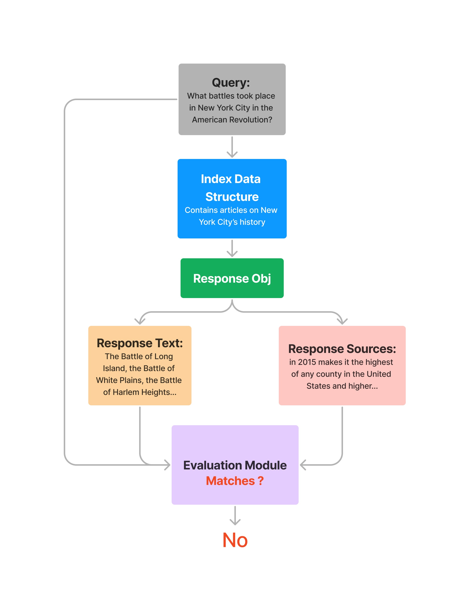
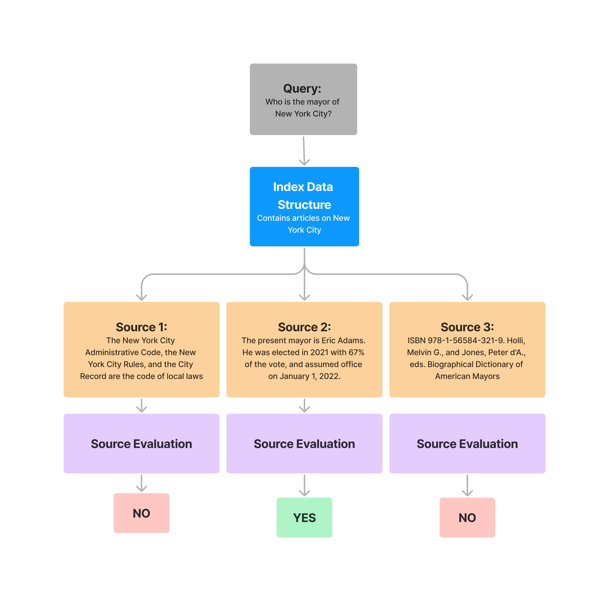

Usage Pattern (Response Evaluation)#
Using BaseEvaluator#
All of the evaluation modules in LlamaIndex implement the BaseEvaluator class, with two main methods:
- The
evaluatemethod takes inquery,contexts,response, and additional keyword arguments.
def evaluate(
self,
query: Optional[str] = None,
contexts: Optional[Sequence[str]] = None,
response: Optional[str] = None,
**kwargs: Any,
) -> EvaluationResult:
- The
evaluate_responsemethod provide an alternative interface that takes in a llamaindexResponseobject (which contains response string and source nodes) instead of separatecontextsandresponse.
def evaluate_response(
self,
query: Optional[str] = None,
response: Optional[Response] = None,
**kwargs: Any,
) -> EvaluationResult:
It's functionally the same as evaluate, just simpler to use when working with llamaindex objects directly.
Using EvaluationResult#
Each evaluator outputs a EvaluationResult when executed:
eval_result = evaluator.evaluate(query=..., contexts=..., response=...)
eval_result.passing # binary pass/fail
eval_result.score # numerical score
eval_result.feedback # string feedback
Different evaluators may populate a subset of the result fields.
Evaluating Response Faithfulness (i.e. Hallucination)#
The FaithfulnessEvaluator evaluates if the answer is faithful to the retrieved contexts (in other words, whether if there's hallucination).
from llama_index.core import VectorStoreIndex
from llama_index.llms.openai import OpenAI
from llama_index.core.evaluation import FaithfulnessEvaluator
# create llm
llm = OpenAI(model="gpt-4", temperature=0.0)
# build index
...
# define evaluator
evaluator = FaithfulnessEvaluator(llm=llm)
# query index
query_engine = vector_index.as_query_engine()
response = query_engine.query(
"What battles took place in New York City in the American Revolution?"
)
eval_result = evaluator.evaluate_response(response=response)
print(str(eval_result.passing))

You can also choose to evaluate each source context individually:
from llama_index.core import VectorStoreIndex
from llama_index.llms.openai import OpenAI
from llama_index.core.evaluation import FaithfulnessEvaluator
# create llm
llm = OpenAI(model="gpt-4", temperature=0.0)
# build index
...
# define evaluator
evaluator = FaithfulnessEvaluator(llm=llm)
# query index
query_engine = vector_index.as_query_engine()
response = query_engine.query(
"What battles took place in New York City in the American Revolution?"
)
response_str = response.response
for source_node in response.source_nodes:
eval_result = evaluator.evaluate(
response=response_str, contexts=[source_node.get_content()]
)
print(str(eval_result.passing))
You'll get back a list of results, corresponding to each source node in response.source_nodes.
Evaluating Query + Response Relevancy#
The RelevancyEvaluator evaluates if the retrieved context and the answer is relevant and consistent for the given query.
Note that this evaluator requires the query to be passed in, in addition to the Response object.
from llama_index.core import VectorStoreIndex
from llama_index.llms.openai import OpenAI
from llama_index.core.evaluation import RelevancyEvaluator
# create llm
llm = OpenAI(model="gpt-4", temperature=0.0)
# build index
...
# define evaluator
evaluator = RelevancyEvaluator(llm=llm)
# query index
query_engine = vector_index.as_query_engine()
query = "What battles took place in New York City in the American Revolution?"
response = query_engine.query(query)
eval_result = evaluator.evaluate_response(query=query, response=response)
print(str(eval_result))

Similarly, you can also evaluate on a specific source node.
from llama_index.core import VectorStoreIndex
from llama_index.llms.openai import OpenAI
from llama_index.core.evaluation import RelevancyEvaluator
# create llm
llm = OpenAI(model="gpt-4", temperature=0.0)
# build index
...
# define evaluator
evaluator = RelevancyEvaluator(llm=llm)
# query index
query_engine = vector_index.as_query_engine()
query = "What battles took place in New York City in the American Revolution?"
response = query_engine.query(query)
response_str = response.response
for source_node in response.source_nodes:
eval_result = evaluator.evaluate(
query=query,
response=response_str,
contexts=[source_node.get_content()],
)
print(str(eval_result.passing))

Question Generation#
LlamaIndex can also generate questions to answer using your data. Using in combination with the above evaluators, you can create a fully automated evaluation flow over your data.
from llama_index.core import SimpleDirectoryReader
from llama_index.llms.openai import OpenAI
from llama_index.core.llama_dataset.generator import RagDatasetGenerator
# create llm
llm = OpenAI(model="gpt-4", temperature=0.0)
# build documents
documents = SimpleDirectoryReader("./data").load_data()
# define generator, generate questions
dataset_generator = RagDatasetGenerator.from_documents(
documents=documents,
llm=llm,
num_questions_per_chunk=10, # set the number of questions per nodes
)
rag_dataset = dataset_generator.generate_questions_from_nodes()
questions = [e.query for e in rag_dataset.examples]
Batch Evaluation#
We also provide a batch evaluation runner for running a set of evaluators across many questions.
from llama_index.core.evaluation import BatchEvalRunner
runner = BatchEvalRunner(
{"faithfulness": faithfulness_evaluator, "relevancy": relevancy_evaluator},
workers=8,
)
eval_results = await runner.aevaluate_queries(
vector_index.as_query_engine(), queries=questions
)
Integrations#
We also integrate with community evaluation tools.
DeepEval#
DeepEval offers 6 evaluators (including 3 RAG evaluators, for both retriever and generator evaluation) powered by its proprietary evaluation metrics. To being, install deepeval:
pip install -U deepeval
You can then import and use evaluators from deepeval. Full example:
from llama_index.core import VectorStoreIndex, SimpleDirectoryReader
from deepeval.integrations.llama_index import DeepEvalAnswerRelevancyEvaluator
documents = SimpleDirectoryReader("YOUR_DATA_DIRECTORY").load_data()
index = VectorStoreIndex.from_documents(documents)
rag_application = index.as_query_engine()
# An example input to your RAG application
user_input = "What is LlamaIndex?"
# LlamaIndex returns a response object that contains
# both the output string and retrieved nodes
response_object = rag_application.query(user_input)
evaluator = DeepEvalAnswerRelevancyEvaluator()
evaluation_result = evaluator.evaluate_response(
query=user_input, response=response_object
)
print(evaluation_result)
Here is how you can import all 6 evaluators from deepeval:
from deepeval.integrations.llama_index import (
DeepEvalAnswerRelevancyEvaluator,
DeepEvalFaithfulnessEvaluator,
DeepEvalContextualRelevancyEvaluator,
DeepEvalSummarizationEvaluator,
DeepEvalBiasEvaluator,
DeepEvalToxicityEvaluator,
)
To learn more on how to use deepeval's evaluation metrics with LlamaIndex and take advantage of its full LLM testing suite, visit the docs.